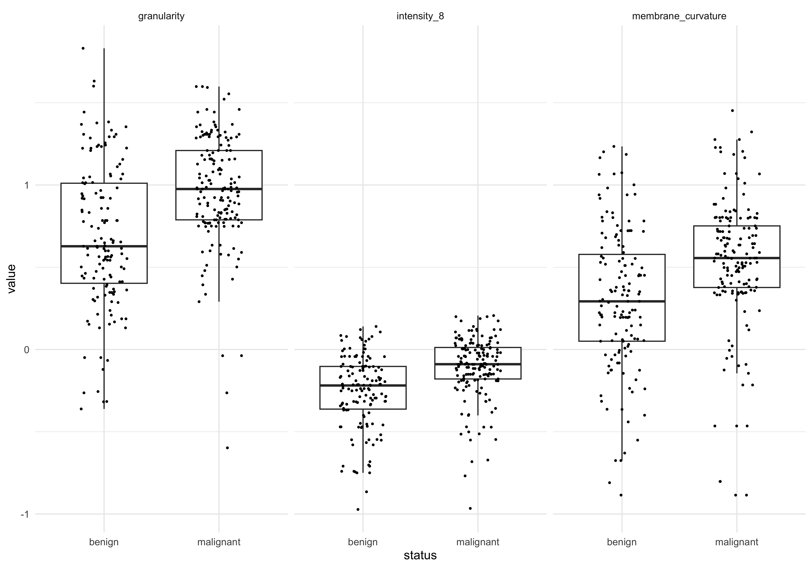

library(tidyverse)
library(readxl)
library(broom)
library(ggridges)
library(tidyrstats)
theme_set(theme_minimal())Part 1
Setup
Read data
tumor_data <- readxl::read_xlsx('data/tumor_data.xlsx')
tumor_data# A tibble: 300 × 42
donorid status cell_size cell_density nuclear_area membrane_curvature
<chr> <chr> <dbl> <dbl> <dbl> <dbl>
1 d001 malignant 0.170 0.654 0.877 2.50
2 d002 malignant 2.95 1.42 0.677 4.78
3 d003 malignant 4.79 4.66 0.593 6.96
4 d004 benign 4.67 1.74 0.423 0.928
5 d005 malignant 13.0 0.887 0.489 3.01
6 d006 benign 3.78 1.02 0.486 0.580
7 d007 malignant 0.663 8.53 1.03 2.17
8 d008 benign 0.950 1.09 0.581 5.10
9 d009 malignant 8.39 3.64 0.955 8.78
10 d010 benign 9.82 7.39 0.403 15.3
# ℹ 290 more rows
# ℹ 36 more variables: granularity <dbl>, border_diffuseness <dbl>,
# vascular_density <dbl>, necrosis_extent <dbl>, stromal_thickness <dbl>,
# mitotic_count <dbl>, texture_1 <dbl>, texture_2 <dbl>, texture_3 <dbl>,
# texture_4 <dbl>, texture_5 <dbl>, texture_6 <dbl>, texture_7 <dbl>,
# texture_8 <dbl>, texture_9 <dbl>, texture_10 <dbl>, intensity_1 <dbl>,
# intensity_2 <dbl>, intensity_3 <dbl>, intensity_4 <dbl>, …The data contains 300 tissue samples which have been imaged in a histology lab, as referenced in this chapter Background. Each sample has the anonymized donor id and malignancy status determined by a trained pathologist (benign or malignant).
Automatic quantification of image features produces 40 ‘features’ including cell shapes, edge (plasma membrane) definition, cytosolic texture, staining intensity, necrosis, vascularity etc.
Explore the data
Reshape for plotting
dat_long <- tumor_data |>
pivot_longer(names_to = "key", values_to = "value",
cols = -c(donorid, status))Check distributions
dat_long |> ggplot(aes(x=value,group=key)) + geom_density()The data doesnt look normally distributed, but there is a big over-plotting problem here. Let’s use the ggridges package to produce a single density plot for each feature:
dat_long |> ggplot(aes(x=value)) +
geom_density_ridges(aes(y=key))Picking joint bandwidth of 0.646The measurements in the dataset have a positive skew, meaning they are non-normal. For best results in machine learning (and data analysis more generally) its usually best to transform the data into a normal distribution where possible.
Log transform
dat_long_log <- dat_long |>
mutate(value=log10(value))Plot transformed data
dat_long_log |> ggplot(aes(x=value)) +
geom_density_ridges(aes(y=key))Picking joint bandwidth of 0.0993The data looks more normal now. Note that the mean values are different. This can be addressed by scaling data, which we return to later.
Cluster analysis
Let’s run an unsupervised machine learning method to explore how the samples group together using a ‘data-driven’ approach. pr_comp() gives us principal components analysis, and requires wide-format data.
Reshape log-transformed data to wide format, and calculate principal components using the quantitative features (i.e., everything except donorid and malignancy status).
dat_wide_log <- dat_long_log |>
pivot_wider(names_from = "key", values_from="value")
pc_dat <- dat_wide_log |> select(-c(donorid,status)) |>
#principal components function
prcomp()We can access the principal components for each sample by using the broom::augment() function. The primary PCs (e.g. 1 thru 5) encode the majority of the variation between samples. As such we focus on primary PCs (or dimension in MDS), when clustering samples
Plot first 2 PCs, coloured by tumor status
pcs_fitted <- pc_dat |> augment()
#Join the sample labels to the fitted PCs
pc_plot_dat <- bind_cols(tumor_data |> select(status),
pcs_fitted)
#Scatter plot
pc_plot_dat |>
ggplot(aes(.fittedPC1, .fittedPC2)) +
geom_point(aes(col=status), size=2)There is certainly not a clear separation between malignant and benign. This indicates we will need to try a more sensitive/advanced method to reliably predict the tissue status.
Linear model
Lets try one of the simplest ML engines - the linear model, to see whether any of the imaging features are significantly associated with tissue status.
If we define a model where imaging feature is the outcome (y) and tumor status is the predictor (x) we can test for associations quite easily, using lm_test().
Our experimental question is ‘Are any features (y) significantly different between benign (x = 0 ) and malignant (x=1)?’
#marginal effects
dat_long_log |> group_by(key) |>
lm_test( value ~ status ) |> filter(term!='intercept') Results for linear model: value ~ status# A tibble: 40 × 6
key term estimate std.error statistic p.value
<chr> <chr> <dbl> <dbl> <dbl> <dbl>
1 granularity statusmalignant 0.280 0.0446 6.28 0.00000000121
2 intensity_8 statusmalignant 0.146 0.0240 6.10 0.00000000325
3 membrane_curvature statusmalignant 0.228 0.0481 4.75 0.00000317
4 shape_metric_4 statusmalignant -0.229 0.0486 -4.72 0.00000361
5 vascular_density statusmalignant 0.108 0.0244 4.43 0.0000133
6 stromal_thickness statusmalignant 0.172 0.0470 3.65 0.000305
7 intensity_5 statusmalignant 0.0773 0.0247 3.13 0.00193
8 intensity_4 statusmalignant 0.0691 0.0274 2.52 0.0123
9 texture_2 statusmalignant -0.0657 0.0350 -1.88 0.0617
10 texture_10 statusmalignant -0.0791 0.0452 -1.75 0.0811
# ℹ 30 more rowsWe can see several features do have significant associations with tissue status! This means that, although those feature associations are not large/strong enough to drive sample separation in PCA, the should be able to be combined to build a good predictive model.
Confirm LM results graphically
#features_of_interest (FOI)
foi <- c('granularity','intensity_8','membrane_curvature')
dat_long_log |>
filter(key %in% foi) |>
ggplot(aes(x=status , y=value)) + geom_boxplot() +
geom_jitter(aes(group=status), width=0.2,size=0.5) +
facet_wrap(~key)
Save output
For the next steps, we will save the log-transformed, wide-format data (used for the PC analysis).
writexl::write_xlsx(dat_wide_log,
'data_processed/tumor_data_log_wide.xlsx')